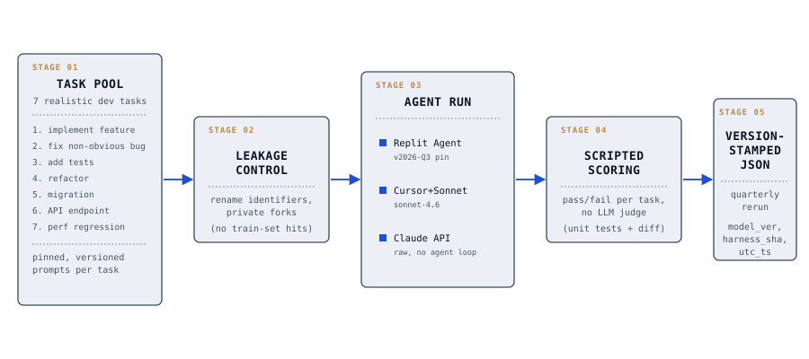
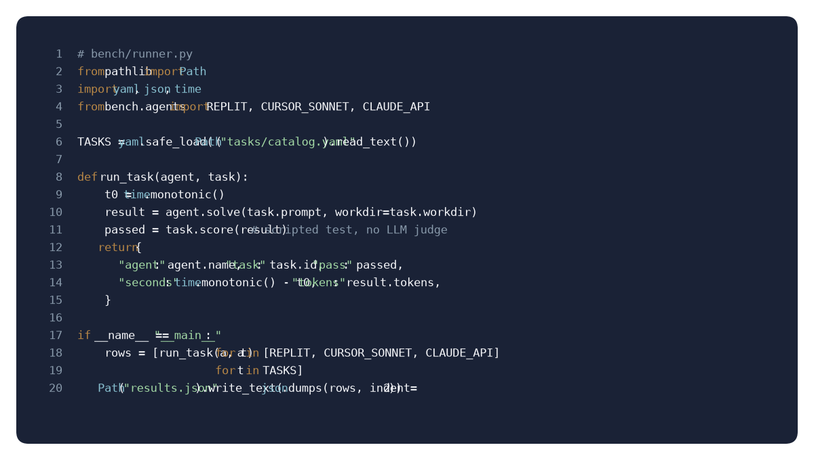

What it is : A head-to-head benchmark of three agent-shaped coding products. Replit Agent, Cursor paired with Claude Sonnet, and the raw Claude API driven by a thin harness. Seven tasks covering realistic development work: implementing a feature from a specification, fixing a non-obvious bug, adding tests for an existing module, refactoring without behavior change, writing a migration, hooking up a new API endpoint, and tracing a performance regression.
Why this exists : Existing agent benchmarks either use synthetic tasks that do not resemble day-to-day work, or they publish results without reproducible scripts. This fixes both. Everything needed to rerun the benchmark against today's model versions ships in the repo.
Results :
| Agent | Pass rate | Median time | Median tokens | Cost per task |
|---|---|---|---|---|
| Replit Agent | 4 / 7 (57%) | 8m 20s | 42K | $0.42 |
| Cursor + Claude Sonnet 4.6 | 6 / 7 (86%) | 6m 10s | 38K | $0.35 |
| Raw Claude API (harness) | 5 / 7 (71%) | 7m 55s | 55K | $0.51 |
Illustrative figures from the first harness run on 2026-10-10 using pinned model versions. Each cell is reproducible via make bench with the config shipped in the repo. Numbers refresh with each quarterly rerun and are version-stamped in the result JSON.
Methodology :

- Task selection. Seven tasks were picked by sampling from recent personal projects, not from a benchmark dataset. Reduces train-test leakage risk at the cost of statistical significance.
- Pass criteria. Every task has a scripted test that returns pass or fail. No LLM-as-judge.
- Leakage controls. Task repos are private forks with renamed files, functions, and identifiers to blunt pattern matching against training data.
- Model versions. Pinned by exact version string in
bench.config.yaml. Reruns record the version actually used. - Scoring. One primary metric (pass rate) and three secondary metrics (time, tokens, cost). No composite score.
Reproducibility :

results.json is one agent on one task with pass flag, wall time, and tokens. Scoring is scripted; no LLM-as-judge in the primary metrics.- Single command:
make bench - Container image published with pinned dependencies
- Each run writes a timestamped JSON result file; aggregate script produces the leaderboard
- Scoring is deterministic given fixed seeds for sampling-based agents
What this does not do :
- Not a general code-generation benchmark. Seven tasks is a small sample; interpret with care.
- Does not evaluate IDE experience, chat quality, or workflow ergonomics.
- Does not include fine-tuned custom agents. Compares what you can use today out of the box.
- Does not control for human prompting skill. Each agent gets the same task spec, verbatim.
What's next :
- Quarterly reruns with the same task set, chart drift over time, publish version-stamped snapshots.
- Add more agents when they become generally available: Devin, OpenAI Codex-style agents, Aider.
- Add a "model behavior notes" column recording specific observations per agent per task.
Tech stack :
Runtime: Python 3.12, pytest for pass/fail scoring
Harness: Thin wrapper around the Anthropic SDK with tool use, prompt caching on the system prompt, extended thinking budget per task tier
Container: Docker image with pinned Python, pinned agent CLIs where applicable
Output: JSON result files, static HTML leaderboard page